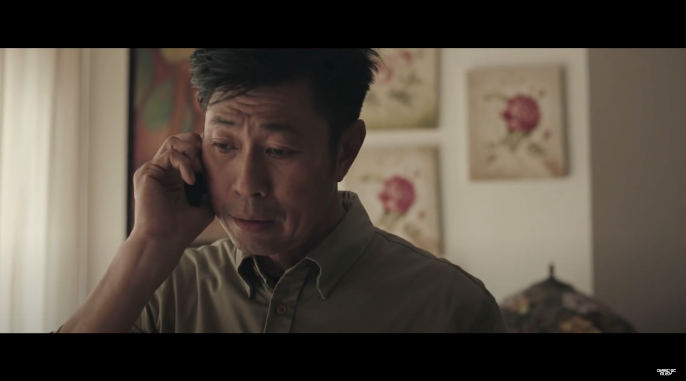
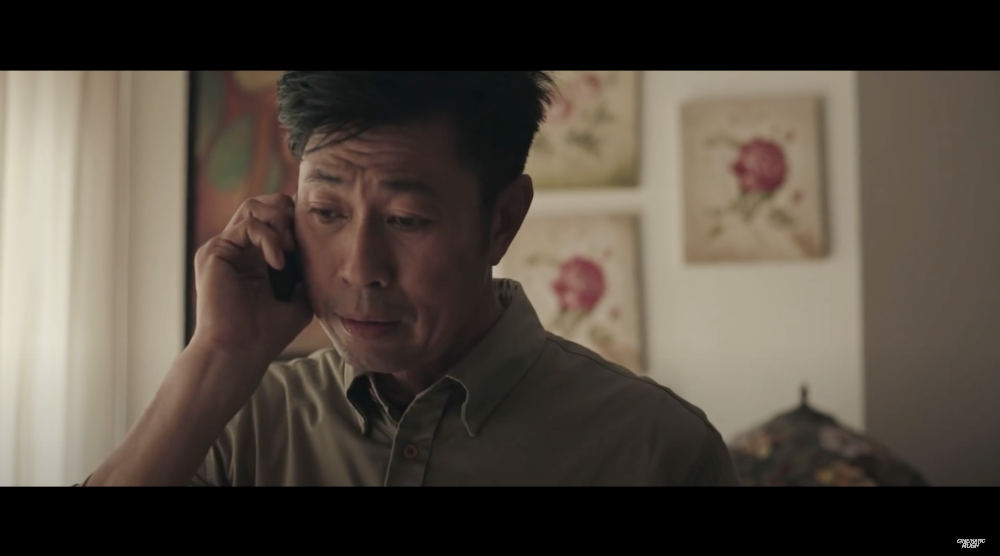

CiNE65 III: Home Brewed
Director
Short film | CiNE65 III
Special Mention & Inter-school Award
Synopsis: Once we step out into the working world, our lives consume us, leaving little time to catch up with old friends. But sometimes fate steps in and reintroduces us to childhood friends – much like Ah Leong and Siew Jie, who prove that the awkwardness from all the years spent apart is easily overcome by the strong bonds of friendship.
Homebrewed was the only film to be nominated in all categories that year. Ultimately, despite the nominations, the film did not secure any wins in the individual categories. Nonetheless, our efforts were acknowledged with an honorable mention, playing a pivotal role in Ngee Ann Polytechnic's triumph in the inter-school category. It was also picked to be screened during ad time before movies at Golden Village Cinemas.
 

The film can be found in the National Archives of Singapore.